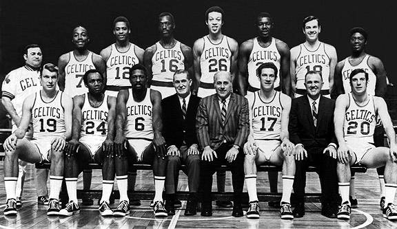
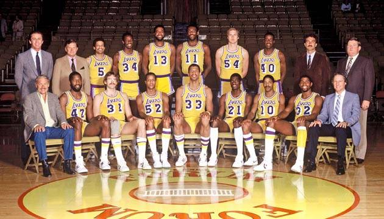
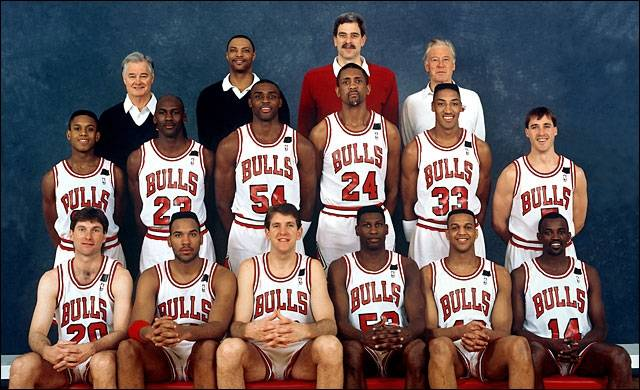
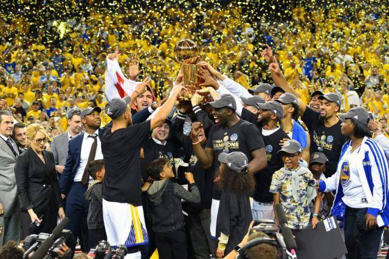

Boston Celtics
Ganadores nada más y nada menos que de 17 títulos de la NBA y siendo los dominadores absolutos entre los los años 1956 - 1969 ganando la friolera de 11 títulos NBA, algo increíble y que difícilmente se volverá a repetir. Aquel equipo fue liderado por un jugador legendario como Bill Russell. Entre las décadas de los 70 y 80 lo tuvieron más complicado y aunque continuaron dominando su conferencia, tuvieron rivales muy duros en las Finales NBA, en cualquier caso consiguieron 5 anillos más gracias a uno de los mejores jugadores de la Historia, el gran Larry Bird. A partir de los años 90 empezó una gran sequía que culminaría con un ansiado título conseguido en la temporada 2007-2008 con Kevin Garnett, Paul Pierce, Rajon Rondo y Ray Allen. Uno de los equipos más laureados de la Historia tenía que tener un apartado especial nuestra tienda boston celtics.
Los Angeles Lakers
Ya igualados a los Celtics con 17 títulos de la NBA nos encontramos con los Lakers, que probablemente ha sido el equipo con las mejores individualidades de la historia, por allí pasaron jugadores que dominaron la liga como Mikan, Jerry West, Wilt Chamberlain, Magic Johnson, Shaq o Kobe Bryant. Su mejor época, sin duda, fue la década de los 80 con el denominado "showtime" de Magic y compañía. Un equipo legendario pero que no creemos que vaya a aumentar su palmarés próximamente. El segundo equipo con más anillos de la NBA tiene su espacio en la tienda lakers Su último título ha sido en 2020 con Lebron James, líder del equipo y que junto a Anthony Davis al ganar y campeonar, han podido rendir tributo y dedicárselo a Kobe Bryant, fallecido este mismo año. En paz descanse.
Chicago Bulls
Para muchos considerado el mejor equipo de la historia, pero muy por detrás de Boston y LA, con 6 títulos (todos ellos en la era de Jordan), nos encontramos a los Bulls de Michael Jordan que junto a su fiel escudero, Scottie Pippen, dominaron los 90 y "arrasaron" la liga entre los años 95 y 98. Poco más se puede decir de un equipo que lo ganó todo pero al que le costó llegar a ese lugar ya que anteriormente tuvo que sufrir duras derrotas contra los Bad Boys al comienzo de los 90. Como no puede ser de otra manera los Bulls son el equipo con más merchandising en la actualidad y en la tienda Chicago bulls podéis encontrar de todo.
Golden State Warriors
También con 6 anillos. El equipo liderado por Stephen Curry ha cambiado el baloncesto actual, jugando un basket llamativo y anotador, sin pivots y con anotadores de 3 en prácticamente todas las posiciones del campo. Un equipo que ha dado mucho que hablar con el paso de los últimos años y que ha sido el único en alcanzar más de 70 victorias en una temporada regular junto con los Bulls de Jordan. En la temporada 2019 perdieron en las finales tras haber venido de ganar los últimos campeonatos al juntar grandes estrellas, con el mencionado Curry, Kevin Durant, Green y Klay Thompson como principales valuartes. Descubre todos los artículos del vigente campeón de la NBA en la tienda warriors